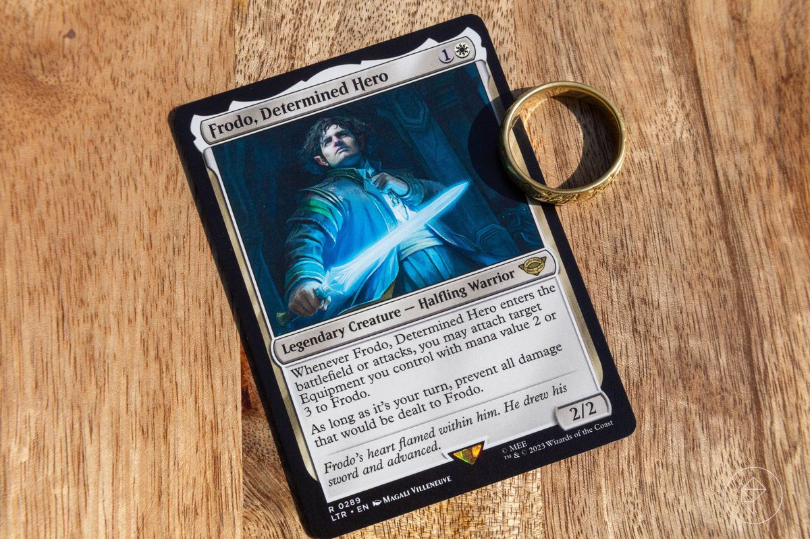
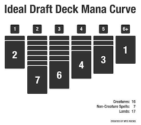

The Heart of Magic - Crafting Your Perfect Deck
In Magic: The Gathering, your deck is your weapon, your toolbox, and the expression of your strategic brilliance. Building a well-crafted deck is essential for victory, and the process itself can be just as much fun as playing the game. Let's dive into the art of deckbuilding!
The Mana Curve: Your mana curve is a visual representation of the mana costs of cards in your deck. A balanced mana curve ensures you have the right resources to play your spells on time throughout the game. Aim for a variety of costs, with more low-cost cards tapering off into fewer high-cost cards.

Deck Size: Most Constructed formats require a minimum deck size of 60 cards. This gives you enough variety without diluting the focus of your deck. While you can have larger decks in some formats, keeping your deck close to the minimum often increases consistency.
Consistency: Playing multiple copies of your key cards increases the chances of drawing them when you need them the most. Usually, you'll want around 3-4 copies of your most important cards, but this can vary depending on the strategy of your deck.
Archetypes
Aggro: These decks aim to win fast with cheap, aggressive creatures, often supported by spells that directly damage your opponent.
Control: Control decks focus on disrupting the opponent's game plan with removal spells and counterspells, aiming to take over the game in the late stages with powerful threats.
Midrange: These decks seek a balance between early aggression and late-game power, adapting to the flow of the game.
Combo: Combo decks revolve around assembling specific card combinations that result in overwhelming effects or instant wins.
The World of Archetypes
Color Identity
White: Focuses on order, protection, and efficient creatures.
Blue: Masters manipulation, counterspells, and card draw.
Black: Specializes in sacrificing and draining life, using powerful removal spells.
Red: Aggression, direct damage, and chaotic effects.
Green: Growth, large creatures, and mana acceleration.
Creature Power: Prioritize creatures that align with your deck's focus. Consider their power and toughness, along with abilities like flying, trample, haste, and others that contribute to your strategy.
Spells and Effects: Build a balanced mix of spells to support your win condition.
Removal: Destroy or neutralize your opponent's threats
Card Drawing: Refill your hand to maintain momentum.
Counterspells: Disrupt your opponent's key plays.
Buffs: Enhance your creatures' power and survivability.
Land Base: Your land base produces the mana you need to cast your spells. Choosing the right mix of basic and non-basic lands is crucial. Experiment to find a land count that consistently allows you to play your spells on curve.
Sideboarding: A sideboard is a set of 15 cards you can swap in and out of your deck between games in a match. This allows you to adapt to specific matchups and improve your odds.
The Meta: Understanding the current meta – the popular decks and strategies – is essential for building competitively. Target your deck and sideboard to disrupt common plays within the meta.
Tuning and Playtesting: Test your deck relentlessly against various opponents or online. Identify areas for improvement and streamline your decklist through repeated play sessions.
Foundations of Deckbuilding
Choose Your Focus
The archetypes above are the broadest categories, but many more specialized archetypes exist within Magic: The Gathering. Some focus on specific mechanics like reanimating creatures from graveyards or milling (putting cards directly from the library into the graveyard). Others center around particular creature types like Elves, Goblins, or Zombies. The possibilities are endless! As you explore the game, you'll discover a vast array of archetypes and deckbuilding strategies to experiment with.
Building Your Deck
Advanced Techniques
Tools and Resources
Start Building Decks Today
Ready to unleash your strategic potential? Start building your first Magic: The Gathering deck today! For further inspiration, explore beginner-friendly resources and preconstructed decks to kickstart your journey.